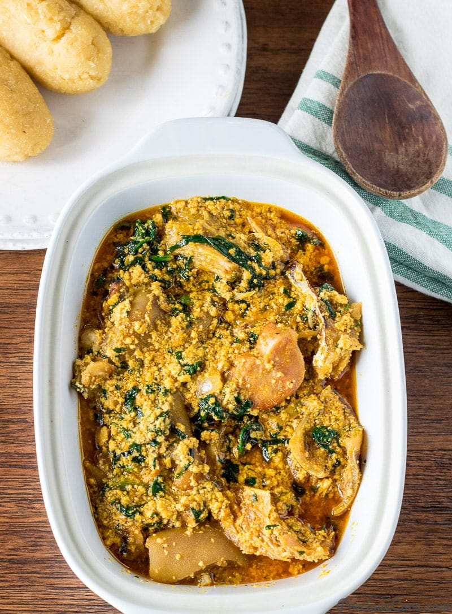

Egusi Soup

Description
Egusi Soup is a Nigerian classic enjoyed in various forms across the country.
Egusi Soup is a soup made with a white kind of pumpkin seeds, though some people prefer to call it melon seeds.
Ingredients
- Ground egusi (or pumpkin seeds)
- Palm oil
- African crayfish
- Meats and fish
- Seasoning
- Pepper
- Leafy greens(eg. Pumkin leaf)
Steps
-
Boil the meats and/or fish you intend to use.
-
Grind the egusi.
-
Saute onions in red palm oil, cook egusi in red palm oil then add the boiled meats, crayfish and seasoning
Back to Top